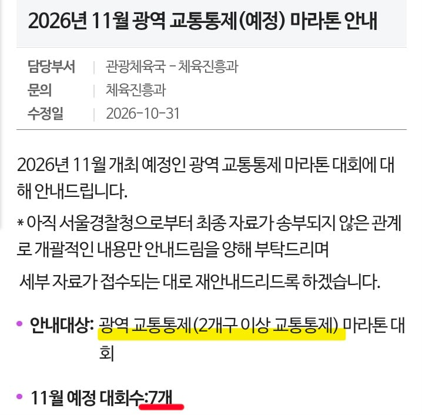
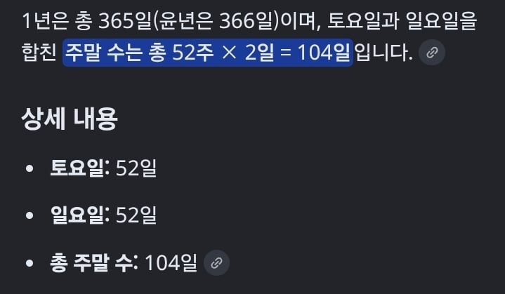

2026년 서울에만 마라톤 대회가 무려 185개임
한달에 약 15개 이상의 마라톤 대회를 하고 있다는거임

그 중에서 2개구 이상 교통통제하는 '광역' 교통통제
Ex) 종로구 내에서만 도는건 미포함
11월 한달에만 광역 교통통제 하는게 7개 대회임
한달에 5개라고 쳐도
1년에 최소 60개 대회를 광역 교통통제 중인거임

마라톤 대회가 거의 주말에 하니
주말의 약 60% 이상을 '광역' 교통통제 받는거임
그냥 교통통제까지 포함하면 1년에 몇번이나 통제하는건지 ㅋㅋ
ㄹㅇ 마라톤에 미친 서울임
이쯤되면 참가자들도 문제있다고봄
수요가 엄청나니 계속 저 ㅈㄹ 여는거지